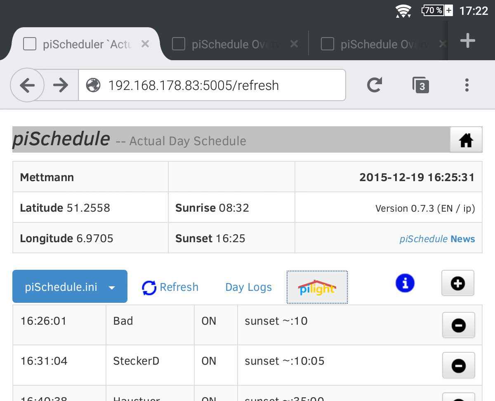
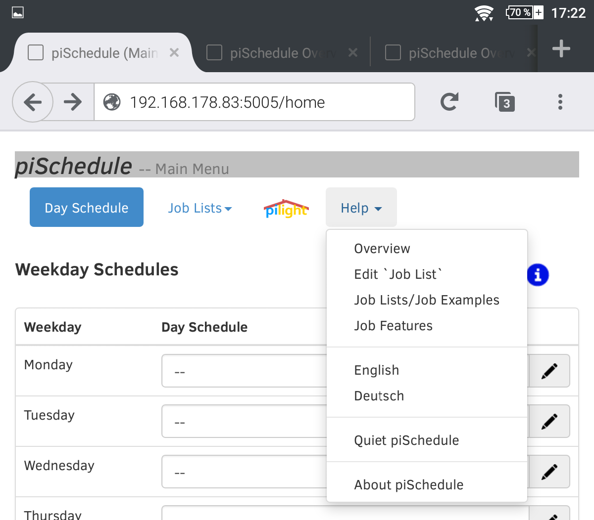
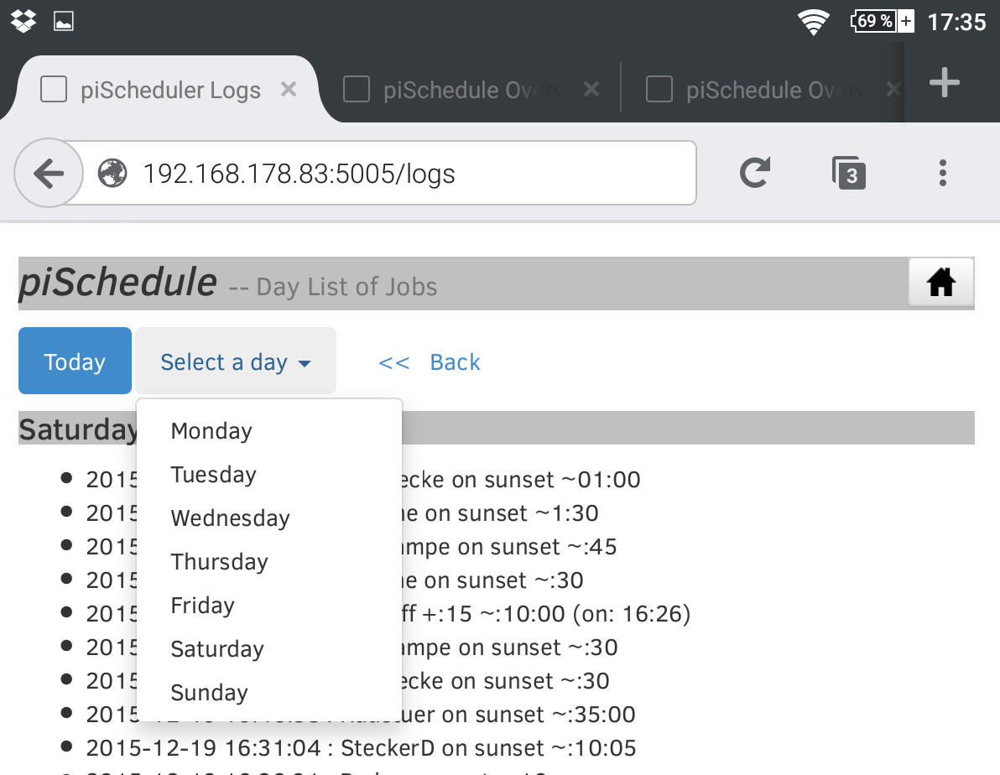
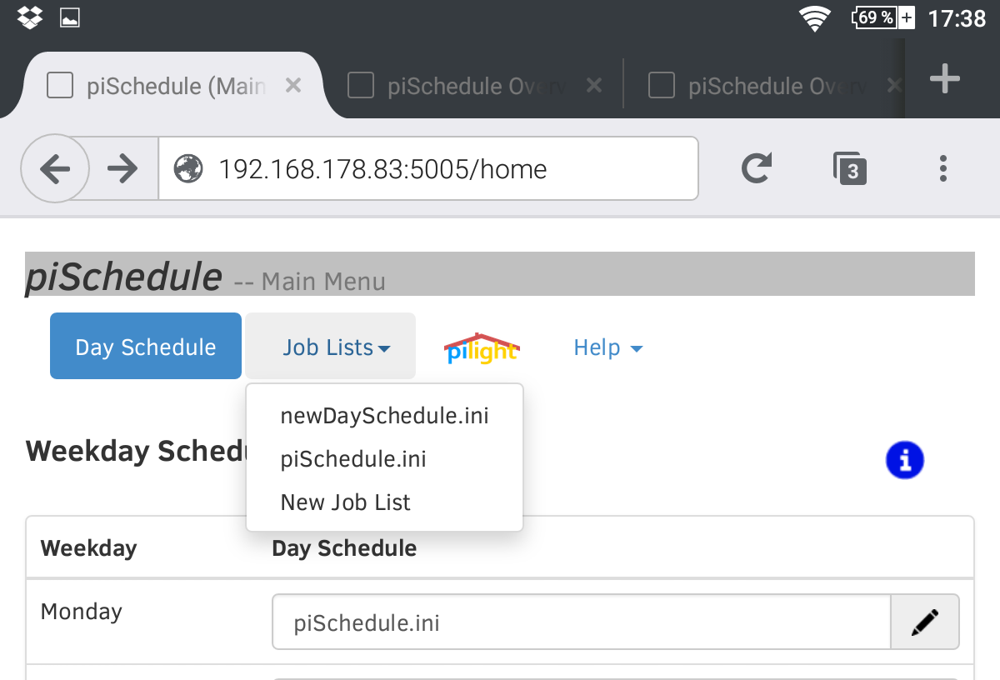

piSchedule An Extension for pilight vers.0.7.5 en 2017-01-17_20

piSchedule extends the application pilight to allow time scheduled switching of devices with user defined Day Schedules which can vary with sunrise/sunset or with random time spans. This way used with the house lighting it will simulate activities also during absence.
piSchedule is an easy to use browser app on smartphones, tablets or on pc. Menu structures let you configure, operate, look at log files or open the documentations. Also a menu button opens pilight on the browser to let you use pilight for showing the active status of the switches or make a direct ON/OFF switching.
piSchedule is addressing users which are looking for a schedule tool to control the switches and after an initial installation all necessary steps can be handled on a Smartphone, Tablet or PC.

See also piSchedule on Smartphone and PC
piSchedule is a Python program, based on pilight 6.0 or 7.0 and uses a WEB browser (eg. Firefox) for the operation.
The setup is done at the Raspberry terminal console (Setup Description). Typically after the installation the console isn't required anymore. The console maybe used for log messages.
pilight Switching with Time Schedule -- Overview
piSchedule offers a menu driven concept for the operation.
Job Definition
With piSchedule the user defines at what time which device has to be switched on/off -- such a definition is called a Job. For the time definitions of a 'Job' a variety of methods are available, absolute time or relative to a previous defined time (eg. to switch off after a certain time period), or time is related to sunrise/sunset. All time values can be varied randomly also. Multiple actions for the same device can be handled with one 'Job'.
Day Schedule
A Day Schedule consists of configured 'Jobs'. The Day Schedule definition is build for one day and will be named and stored as a text file (extension .ini required) -- example piSchedule.ini.
Also piSchedule works with menu driven, the experienced user can use his favoured editor (vi, nano etc) to build/edit such day schedule files.
For starting a day schedule the user selects one of those day schedule files with a menu list, that way that plan is activated and piSchedule will calculate the switching time values also based on sunrise/sunset or any random time span.
With activation of a 'Job' also a consistence check of the resulting time values is done. If the time is in the past related to the activation, that job will be ignored but piSchedule will write it to log-file.
(A detailed example and more technical aspects of 'piSchedule Jobs' are on Scheduling Examples)
Week Schedule
The week schedule defines for each weekday a different day schedule. If no day schedule for a given weekday is defined (or it's not valid) the day schedule of the previous weekday is used again. This way a definition of just two day schedules for Monday .. Friday and Saturday .. Sunday makes it easy to have a working days and a weekend schedule.
The definition is made on the "Main Menu" page.

For each weekday a 'Day Schedule' is selected from the menu. The choice of '--' removes a previously selected schedule for that day, this way the schedule of weekday before that day will be used.
piSchedule -- Start/Stop
With starting of piSchedule the following parameters -- the preference are retrieved:
-
Location is the place where piSchedule is installed. This is used to calculate sunrise/sunset on a daily basis.
-
Language (locale) Language code/-version. The language version is retrieved from the installation, but can changed with the browser (web-GUI).
Currently piSchedule supports DE for German and EN for English.
See here for other language. -
Server/Port Automatic retrieve of the networking details
All parameters/preferences are stored to the file `piSchedule.prefs.json`. Using the browser web-GUI with ('/prefs') the data can be shown.
Starten -- as a Service
piSchedule will be started on the Raspberry console with
sudo service piSchedule start
- This will start piSchedule in the background but closing the console will not terminate piSchedule.
- Also with starting as a "service" piSchedule will also start after power loss or with every power-on of the Raspberry automatically. If with earlier operation of piSchedule a 'Day Schedule' was activated, the schedule will be reloaded and activated, it becomes the 'active' day schedule.
The succesfull start of piSchedule shows the following message on the console (example)
[....] Starting system piSchedule daemon:Starting /home/pi/piScheduleXX/piSchedule.py...
Detaching to start /home/pi/piScheduleXX/piSchedule.py...done.
. ok
[ ok ] /home/pi/piScheduleXX/piSchedule.py is running.
piSchedule {server}:{port} >>192.168.178.80:5005<<
Futher use of piSchedule is done with the browser (Web-GUI). With starting piSchedule on the
console at the last line the address to start piSchedule can be found.
With the example above it's 192.168.178.80:5005.
Stoppen -- as a Service
piSchedule stopp with:
sudo service piSchedule stop
piSchedule on Smartphone/Tablet or PC
After starting piSchedule with the console, the browser it used to operate piSchedule.
The console is only necessary with very limited situation like locking into the log files.
The piSchedule start address http://{server}:{port} will be entered to the addressbox of the browser and piSchedule
opens the Web-page with the 'Actual Day Schedule' (see also above).
On the browser pages and dialogs  icons help to open
documentation and description for the current context.
icons help to open
documentation and description for the current context.
Overview Web Pages
-
Main Menu / Home Page

Note On all pages the piSchedule headline works as a menu button to return to the main page.
The Main Menu gives access to different piSchedule functions, it has a direct call for [pilight] and a menu with [Help] to open the documentation pages of piSchedule.
Also the language version for the web-GUI and the documentation can be changed.
[Terminate piSchedule] Terminate piSchedule without going to the console. A restart is only possible on the console!
[About piSchedule]

The last menu item will open a dialog to display the installation details, to open the piSchedule Forum and to send a e-mail message to the developer. -
[Day Schedule] Overview
(Location, Sunrise/Sunset, Geo-Coordinates)The page 'Actual Day Schedule' shows the actual status of piSchedule.
This pages is opened- automatically with the first call of the Web-GUI.
- with blue menu button on the home page

(see also above with first picture).
The page has three parts:
- Table with Location and the value for the Geo-Coordinates as well
the day time for sunrise and sunset
The table also shows some actually used values, the piSchedule version, the language and the method to retrieve the location (ip/gmaps - see also Setup).
The link "piSchedule News" opens actual notes about the use, update etc of piSchedule and offers a direct link to the piSchedule Forum as well.
- Menu with 4 buttons
▸ The blue button shows -- if a Day Schedule was selected before -- the name of the used Day Schedule (on the picturepiSchedule.iniwas selected), the button has a menu list as well so one of the stored schedules can be selected.
▸ [Refresh] re-activate the Day Schedule in use, that way only upcoming jobs/switch activities will be displayed.
▸ [Day-Logs] Presents a page with the jobs already done 'today' (see below).
▸ With the right hand button additional jobs can be defined. They are only valid for the current day. Also re-loading of the day schedule that added job will be lost. To add an additional job to the day schedule see Day Schedule / Job Edit.
Use the icon to open a help to this context.
icon to open a help to this context.
- Actual Jobs of the day
This table presents all scheduled jobs for day to occure after the actual time. The rows on the table result from resolving the entries to the actual day schedule stored in the INI file (see blue button above).
On the row beside the switch time and the device can be seen the ON or OFF and the instruction for it. For OFF setting in parenthesis the related ON time is shown for easy reference.
The icon on the row allows to remove that job.
Also again, this is only valid if the INI file isn't reloaded!
icon on the row allows to remove that job.
Also again, this is only valid if the INI file isn't reloaded!

[Day-Logs]

This page loads automatically a list with [Today] executed switching activities.
[Select a Day] A menu list with the weekdays, so an alternative log of a weekday can be displayed.
piSchedule writes these logs each day of the week and overwrites the file of the previous week.
[<< Back] Goes back to the 'Actual Day Schedule'
[Job Lists] Edit/Add
To add or edit the job list / day schedules a specific Editor dialog page is opened at the main menu.
The menu button [Job Lists] gives not only a list of all available day schedules (INI/Text-files) but let the user select a schedule for loading on a special editor. That editor page let the user add, edit and delete Jobs interactively. The edited schedule can be re-stored or stored with a different/new name (INI/Text-file with .ini extension).
There is a detailed description of this function Day Schedule Editor
Examples for INI/Text and Prefs Files
piSchedule Setup
piSchedule is a Python program, it runs on the Raspberry with a installation of pilight 6.0 or 7.0; pilight has to be started for the operation of piSchedule.
The installation and an update of all piSchedule components is described in detail on the page piSchedule Setup
Appendix
Start/Stop with 'service'
The piSchedule start command sudo service piSchedule start starts an instance
of piSchedule and will be executed in the background.
The 'service' commands controls the operation of piSchedule, see also:
pi@raspberrypi ~ $ sudo service piSchedule
Usage: /etc/init.d/piSchedule {start|stop|restart|status}
pi@raspberrypi ~ $
piSchedule Preferences
piSchedule stores important parameter in a file "piSchedule.prefs.json" and at start it read the previous used parameters from that file. If the file is missing, piSchedule will retrieve those preferences and stores them for further use.
The preference file "piSchedule.prefs.json" can be resetted at the console prompt with
sudo echo "[]" > ~/piScheduleXX/piSchedule.prefs.json
piScheduleXX replace with actuell used directory!
The actual setting of the preferences can be shown with http://{server}:{port}/prefs
piSchedule Language setting
piSchedule supports the languages German and English for the browser and the documentation.
With the extension of the file ~/piScheduleXX/piStrings.json other languages can be supported as well for the Web-GUI.
Such an additional language/file extension will be activated directly with a restart of piSchedule
Note
The documentation for other languages needs to be stored to the download structure. (Please call the author).
piSchedule Logging
The weekday log files (Monday.log ... Sunday.log) show the executed jobs with https://{server}:{port}/logs; additionally piSchedule writes two log-files in the directory ~/piScheduleXX/logs/. Those can be shown on the console with:
cat ~/piScheduleXX/logs/piInfo.log -- messages for the calculations of the Day Schedule/Jobs an of the browser calls
cat ~/piScheduleXX/logs/piSystem.log -- System relevant messages, also error messages
piScheduleXX replace with actuell used directory!
Contributions and Acknowledgement
Thanks to framp! He helped with feedback, testing and his Linux experience to improve the program and functionality.
© gNeandr -- piSchedule is a free Open Source Project -- Feel free to use it.
 Donate what piSchedule is worth for you.
Donate what piSchedule is worth for you.
For Comments, Questions and Feedback please use piSchedule Forum